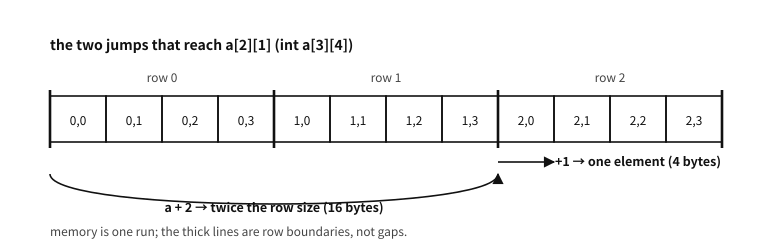

40 Multidimensional arrays
What to know first
Looking back
Chapter 39 said a[i] is sugar for *(a + i), and that adding an integer to a pointer moves it by the size of the type pointed at. Then in int a[3][4], how many bytes does a + 1 move?
A. Sixteen — not one int (four) but one row of four ints. The key is what the elements of a are. int a[3][4] is “three arrays of four ints”, so one element of a is a whole row (int[4]). Nothing in chapter 39’s rule changed — “move by one element” applied exactly as before; it is just that the element is itself an array.
This chapter is everything that grows out of that one sentence.
The need for this chapter, and its context
By the end of this chapter
int **, how far you may go in viewing one address through different types, and the patterns of practice (leading dimension, row pointers, strides) along with what traversal order does in matrix work, and the accidents that are new with more dimensions (row overflow, overflow in index arithmetic, running out of stack).The questions this chapter answers
- Are there languages that lay them out column-major?
- Then why are
a[i][j]anda[j][i]different places? Both are just additions. - May I take
int *p = &a[0][0];and sweep it flat asp[7]? It is the same memory and the offset works out. - Is the submatrix the only gain from keeping a separate stride?
40.1 What a multidimensional array is — holding tables and grids#
A good share of the world’s data is not a line but a table. A timetable is days × periods, a report card students × subjects, a go board 19 × 19, a photo rows of pixels × columns of pixels, a spreadsheet rows × columns. To point at one cell of such data you need two numbers — “row 3, column 2”.
The arrays of chapter 39 can hold it. Lay the cells out in one line and work out by hand that “row r, column c is element r * columns + c”. But that sum then has to be written at every access, and one wrong column count reads the wrong cell. A multidimensional array is the notation that hands that sum to the compiler. Write grade[r][c] and two numbers find the cell.
There is no separate rigorous definition — and that is this chapter’s first point. The standard’s list of types has no branch called “multidimensional array type”; it is simply the definition of an array read in chapter 39 (“array of T”) applied once more with an array in the element type’s place. The standard says so where it explains the subscript operator.
“ Successive subscript operators designate an element of a multidimensional array object. … It follows from this that arrays are stored in row-major order (last subscript varies fastest).1 ”
So this chapter has almost no new rules. It only checks, one by one, how the rules of arrays — contiguous layout, subscript = pointer arithmetic, decay in parameters — look when the element is an array.
40.2 An array of arrays — the substance first#
There is only one way to read int a[3][4]: three arrays of four ints. “Three rows by four columns” is the human reading; what the type says is “an array whose element is int[4]”.
examples-en/arrays-2d/md_layout.c
/* What a multidimensional array really is — sizes, addresses, and how a
subscript expression unfolds. */
#include <stdio.h>
int main(void)
{
int a[3][4] = {
{ 11, 12, 13, 14 },
{ 21, 22, 23, 24 },
{ 31, 32, 33, 34 },
};
/* -- (1) what, and how many ------------------------------------ */
printf("sizeof a = %2zu (three rows of four ints)\n", sizeof a);
printf("sizeof a[0] = %2zu (one row = four ints)\n", sizeof a[0]);
printf("sizeof a[0][0] = %2zu (one element)\n\n", sizeof a[0][0]);
/* -- (2) memory is one run — row-major -------------------------- */
printf("as byte offsets from the start:\n");
const char *base = (const char *)&a[0][0];
for (int i = 0; i < 3; i++) {
printf(" row %d:", i);
for (int j = 0; j < 4; j++)
printf(" a[%d][%d]=+%02td", i, j, (const char *)&a[i][j] - base);
printf("\n");
}
printf(" the last subscript varies fastest (row-major).\n\n");
/* -- (3) unfolding a[2][1] by hand ------------------------------ */
puts("a[2][1], step by step (addresses as byte offsets from a):");
printf(" a type int(*)[4], +%td\n",
(const char *)a - base);
printf(" a + 2 step = sizeof(int[4]) = %zu -> +%zu, offset +%td\n",
sizeof(int[4]), 2 * sizeof(int[4]), (const char *)(a + 2) - base);
printf(" *(a + 2) type int[4] -> decays to int*, offset +%td\n",
(const char *)*(a + 2) - base);
printf(" *(a+2) + 1 step = sizeof(int) = %zu -> +%zu, offset +%td\n",
sizeof(int), 1 * sizeof(int), (const char *)(*(a + 2) + 1) - base);
printf(" *(*(a+2)+1) value = %d, a[2][1] = %d (the same)\n\n",
*(*(a + 2) + 1), a[2][1]);
/* -- (4) same address, different types -------------------------- */
printf("a, a[0], &a[0][0], &a are all the same address (offset 0):\n");
printf(" a +%td (int(*)[4])\n", (const char *)a - base);
printf(" a[0] +%td (int*)\n", (const char *)a[0] - base);
printf(" &a[0][0] +%td (int*)\n", (const char *)&a[0][0] - base);
printf(" &a +%td (int(*)[3][4])\n", (const char *)&a - base);
printf("but one step means a different distance:\n");
printf(" a + 1 -> +%td bytes (one row)\n",
(const char *)(a + 1) - (const char *)a);
printf(" a[0] + 1 -> +%td bytes (one element)\n",
(const char *)(a[0] + 1) - (const char *)a[0]);
printf(" &a + 1 -> +%td bytes (the whole array)\n",
(const char *)(&a + 1) - (const char *)&a);
return 0;
}
Output
sizeof a = 48 (three rows of four ints)
sizeof a[0] = 16 (one row = four ints)
sizeof a[0][0] = 4 (one element)
as byte offsets from the start:
row 0: a[0][0]=+00 a[0][1]=+04 a[0][2]=+08 a[0][3]=+12
row 1: a[1][0]=+16 a[1][1]=+20 a[1][2]=+24 a[1][3]=+28
row 2: a[2][0]=+32 a[2][1]=+36 a[2][2]=+40 a[2][3]=+44
the last subscript varies fastest (row-major).
a[2][1], step by step (addresses as byte offsets from a):
a type int(*)[4], +0
a + 2 step = sizeof(int[4]) = 16 -> +32, offset +32
*(a + 2) type int[4] -> decays to int*, offset +32
*(a+2) + 1 step = sizeof(int) = 4 -> +4, offset +36
*(*(a+2)+1) value = 32, a[2][1] = 32 (the same)
a, a[0], &a[0][0], &a are all the same address (offset 0):
a +0 (int(*)[4])
a[0] +0 (int*)
&a[0][0] +0 (int*)
&a +0 (int(*)[3][4])
but one step means a different distance:
a + 1 -> +16 bytes (one row)
a[0] + 1 -> +4 bytes (one element)
&a + 1 -> +48 bytes (the whole array)
The first block of the demonstration is the check. sizeof a is 48 (the whole), sizeof a[0] is 16 (one row), sizeof a[0][0] is 4 (one element). The elements of a are rows; the elements of a row are ints.
a occupies one run of memory. In the second block the offsets from a[0][0] to a[2][3] run 0, 4, 8 … 44 with no gaps. The standard pins this layout down — the last subscript varies fastest (row-major). A multidimensional array does not fold memory into a grid; it is one line with the rows laid end to end.
Q. Are there languages that lay them out column-major?
A. Yes. Fortran is the classic one, along with MATLAB, R, Julia, and OpenGL’s matrix convention. Neither is correct in the abstract — it is a convention, and C chose row-major.
Where the difference bites is clear: calling numeric libraries written in Fortran (BLAS, LAPACK) from C. The same memory is read in a different order, so passing it straight across is passing the transpose. That is why such APIs almost always carry an argument saying “read this matrix transposed” (CblasRowMajor / CblasColMajor, or a trans flag).
40.3 How a subscript unfolds#
a[i][j] is not magic. It is chapter 39’s two rules applied twice.
Followed one step at a time, with the types:
| expression | type | size of one step |
|---|---|---|
a | int[3][4] → decays to int (*)[4] | — |
a + i | int (*)[4] | sizeof(int[4]) = 16 bytes |
*(a + i) | int[4] → decays to int * | — |
*(a + i) + j | int * | sizeof(int) = 4 bytes |
*(*(a + i) + j) | int (an lvalue) | — |
Table 40.1 — How a multidimensional subscript unfolds
The third block of the demonstration shows that table as actual numbers: a + 2 lands at offset +32 (= 2 × 16), *(a+2) + 1 at +36 (= 32 + 1 × 4). Out comes the value of a[2][1].
There is no new rule here. Chapter 39 said “pointer plus integer moves by the element size”; this time the element happened to be int[4]. Half of what makes multidimensional arrays feel hard is missing that.

Figure 40.1 — The two jumps that reach a[2][1] — one row-sized, one element-sized.
Q. Then why are a[i][j] and a[j][i] different places? Both are just additions.
A. Additions, but multiplied by different factors. Written out in bytes the offset is i × 16 + j × 4. The factor on i (the size of a row) and the factor on j (the size of an element) differ, so swapping them lands elsewhere — a[1][2] is +24 and a[2][1] is +36.
In general, for T a[d_1][d_2]...[d_n] the offset of a[i_1]...[i_n] is
Every inner dimension enters as a factor, so only the outermost dimension is never used in the computation — which is why the first dimension may be omitted in a parameter (next section).
40.4 Parameters — why it is not int **#
Chapter 39 said an array parameter decays to a pointer but only the outermost dimension is stripped. Here is what that means in more than one dimension.
void f(int m[3][4]); /* the three are one and the same declaration */
void f(int m[][4]);
void f(int (*m)[4]);The outer 3 goes and the 4 stays. The offset formula above is the reason — what the computation needs is the inner dimensions; the outer one is unused. So inner dimensions must be written (int m[][] does not compile) and the outer may be written but is not checked.
examples-en/arrays-2d/md_param.c
/* Three layouts for passing a 2-D array to a function — and why it is not int**. */
#include <stdio.h>
#include <stdlib.h>
/* (1) Fixed width: the inner dimension stays in the type.
The three spellings are the same declaration to the compiler. */
static int sum_fixed(int m[3][4]) { int s = 0; for (int i=0;i<3;i++) for (int j=0;j<4;j++) s += m[i][j]; return s; }
/* These two are *exactly the same* declaration (see the text):
static int sum_fixed(int m[][4]);
static int sum_fixed(int (*m)[4]); */
/* (2) VLA parameter (C99): the width arrives at run time — the way for numeric code */
static int sum_vla(size_t rows, size_t cols, const int a[rows][cols])
{
int s = 0;
for (size_t i = 0; i < rows; i++)
for (size_t j = 0; j < cols; j++) s += a[i][j];
return s;
}
/* (3) An array of row pointers: a different layout — rows may live apart */
static int sum_rows(size_t rows, size_t cols, int *const rowp[rows])
{
int s = 0;
for (size_t i = 0; i < rows; i++)
for (size_t j = 0; j < cols; j++) s += rowp[i][j];
return s;
}
int main(void)
{
int a[3][4] = { {1,2,3,4}, {5,6,7,8}, {9,10,11,12} };
printf("(1) fixed width sum_fixed(a) = %d\n", sum_fixed(a));
printf("(2) VLA param sum_vla(3,4,a) = %d\n", sum_vla(3, 4, a));
/* build an array of row pointers over the same data */
int *rowp[3] = { a[0], a[1], a[2] };
printf("(3) row pointers sum_rows(3,4,rowp) = %d\n\n", sum_rows(3, 4, rowp));
/* see the difference in layout */
printf("the layouts differ:\n");
printf(" a : int[3][4] — one run of %zu bytes, 0 indirections\n", sizeof a);
printf(" rowp : int*[3] — %zu bytes of pointers + the rows, 1 indirection\n", sizeof rowp);
/* the cost of swapping rows differs */
int *tmp = rowp[0]; rowp[0] = rowp[2]; rowp[2] = tmp; /* only two pointers move */
printf("\nswap the row pointers and the order changes with the data untouched: ");
for (size_t j = 0; j < 4; j++) printf("%d ", rowp[0][j]);
printf("\n (doing the same on a 2-D array means actually moving 16 bytes)\n");
/* jagged rows — a layout a 2-D array cannot have */
int r0[] = { 1 }, r1[] = { 2, 3, 4 };
int *jag[2] = { r0, r1 };
size_t len[2] = { 1, 3 };
printf("\njagged rows: ");
for (size_t i = 0; i < 2; i++)
for (size_t j = 0; j < len[i]; j++) printf("%d ", jag[i][j]);
printf("\n");
return 0;
}
Output
(1) fixed width sum_fixed(a) = 78
(2) VLA param sum_vla(3,4,a) = 78
(3) row pointers sum_rows(3,4,rowp) = 78
the layouts differ:
a : int[3][4] — one run of 48 bytes, 0 indirections
rowp : int*[3] — 24 bytes of pointers + the rows, 1 indirection
swap the row pointers and the order changes with the data untouched: 9 10 11 12
(doing the same on a 2-D array means actually moving 16 bytes)
jagged rows: 1 2 3 4
A common misconception. “A 2-D array can be received as int **”
The most common and most expensive misconception. int a[3][4] decays to int (*)[4], not to int **. The two have entirely different layouts.
int (*)[4] points at the first row of a place where twelve ints lie in a row. One address computes every slot. int ** points at a place where pointers to int lie in a row — finding a slot means following an address twice, and that array of pointers has to actually exist.
So passing a real 2-D array to a function taking int ** is rejected by the compiler. Force it through with a cast and you get ints mistaken for addresses and followed — a collapse with no diagnostic. The the layouts differ: block of the demonstration puts the two layouts, with their sizes and indirection counts, side by side.
The VLA (variable-length array) parameter earns its keep here (chapter 39). Even when the width is settled at run time, the a[i][j] notation still works.
void sum(size_t rows, size_t cols, const int a[rows][cols]);Taking the sizes first is the rule — the names used as dimensions must already be declared. This is the most readable form in modern numeric code, and the default this book recommends.
40.5 One address, different eyes — the contract of flattening#
The last block of the first demonstration (md_layout.c) is where this section starts. a, a[0], &a[0][0] and &a are all the same address. But their types differ, so one step means a different distance — 16, 4, 4 and 48 bytes respectively. Holding the same number does not mean being able to do the same things with it (chapter 36’s “an address is not simply an integer” made flesh).
Which raises the natural question: since the address is the same, may one int * sweep the whole 2-D array flat?
Q. May I take int *p = &a[0][0]; and sweep it flat as p[7]? It is the same memory and the offset works out.
A. It works on virtually every compiler, but by the letter of the standard it is outside the contract. The reason has to be separated carefully — two rules are entangled here and only one of them bites.
Strict aliasing (§6.5.1p7) is not the problem. That rule says not to read an object through an lvalue whose type does not match the object’s effective type, and the thing being read here, a[i][j], has effective type int either way. Reading it through an int lvalue breaks nothing.
What bites is the range of the pointer arithmetic (§6.5.7, and chapter 38’s provenance). &a[0][0] points at the first element of a[0], an array of four. Where that pointer may go is inside a[0] and one past its end. p + 4 is that one-past position — it may be formed but not dereferenced — and p + 5 is outside the contract from the moment it is formed. That a[1][0] happens to sit at that address is beside the point: the rule is about provenance, not about addresses.
Sweeping a declared 2-D array flat is therefore a grey zone: it works on virtually every compiler but is outside the contract by the letter of the standard. The grey zone is old, and the committee knows what practice does. The rule stands because optimisers lean on the promise — “this pointer only moves inside that row” has to be believable before a loop can be rewritten (the same logic as chapter 39’s real case).
In practice. The other direction is sound — allocate flat, view as 2-D
The practical answer is to reverse the direction. Instead of sweeping a declared 2-D array flat, view flat memory as two-dimensional.
double *m = malloc(rows * cols * sizeof *m);
double (*view)[cols] = (double (*)[cols])m; /* a 2-D view */
view[i][j] = ...;This direction is sound for a reason. Memory from malloc has no declared type, and the standard settles the effective type of such an object as “the type of the lvalue used to store into it” (§6.5.1p6). Writing through a 2-D shape makes that shape the effective type. And the range for the arithmetic is the whole allocated block, so no sweep leaves its provenance.
Hence the working rule: if you want to handle it flat, allocate it flat. If you really must pass a declared 2-D array around flat, handle it row by row or move it with memcpy.
40.6 The patterns of practice#
There are four ways multidimensional data is handled. Here they are with where each is actually used.
| Pattern | Shape | Layout | Where it is seen |
|---|---|---|---|
| Fixed-width 2-D | int a[R][C], int (*)[C] | One run | Frame buffers, game boards, embedded tables |
| VLA parameter | a[rows][cols] | One run | Numeric code; the default since C99 |
| Flat + leading dimension | a[i * lda + j] | One run | BLAS, LAPACK, submatrices |
| Array of row pointers | int *rows[R], int ** | Rows apart | argv, image libraries, jagged rows |
Table 40.2 — The four patterns for handling multidimensional data
40.6.1 Flat plus a leading dimension — the lingua franca of numeric libraries#
examples-en/arrays-2d/md_flat.c
/* Allocate flat, view as 2-D — the BLAS-style pattern (leading dimension, submatrix). */
#include <stdio.h>
#include <stdlib.h>
/* Leading dimension (lda): the *stride* from one row to the next.
It may differ from the column count — which is what makes submatrices free. */
#define AT(a, lda, i, j) ((a)[(size_t)(i) * (size_t)(lda) + (size_t)(j)])
static void fill(double *a, size_t lda, size_t rows, size_t cols)
{
for (size_t i = 0; i < rows; i++)
for (size_t j = 0; j < cols; j++)
AT(a, lda, i, j) = (double)(10 * (i + 1) + (j + 1));
}
static void show(const char *tag, const double *a, size_t lda,
size_t rows, size_t cols)
{
printf("%s (lda=%zu):\n", tag, lda);
for (size_t i = 0; i < rows; i++) {
printf(" ");
for (size_t j = 0; j < cols; j++) printf("%5.0f", AT(a, lda, i, j));
printf("\n");
}
}
int main(void)
{
const size_t rows = 4, cols = 5;
/* one run — check the multiplication for overflow first (chapter 96's habit) */
size_t n;
if (__builtin_mul_overflow(rows, cols, &n)) return 1;
double *m = malloc(n * sizeof *m);
if (!m) return 1;
fill(m, cols, rows, cols);
show("whole 4x5", m, cols, rows, cols);
/* (1) A 2-D view — memory from malloc has no declared type, so putting
an array shape on it is the sound direction (see the text). */
double (*view)[cols] = (double (*)[cols])m;
printf("\nthrough the view, view[2][3] = %.0f (flat: m[2*5+3] = %.0f)\n",
view[2][3], m[2 * 5 + 3]);
/* (2) A submatrix — pointing, not copying.
Rows 1..2, columns 1..3: a 2x3 block. The stride stays 5. */
double *sub = &AT(m, cols, 1, 1);
printf("\na submatrix is a start plus a stride, not a copy:\n");
show(" sub 2x3", sub, cols, 2, 3);
/* write through the submatrix and the original changes — it is a view */
AT(sub, cols, 0, 0) = -1;
printf("\nwriting -1 at sub(0,0) changes the original at (1,1):\n");
show("whole 4x5", m, cols, rows, cols);
/* (3) Transposition becomes a stride question too — only the reading order changes */
printf("\nreading transposed (row step 1, column step %zu):\n", cols);
for (size_t j = 0; j < cols; j++) {
printf(" ");
for (size_t i = 0; i < rows; i++) printf("%5.0f", AT(m, cols, i, j));
printf("\n");
}
free(m);
return 0;
}
Output
whole 4x5 (lda=5):
11 12 13 14 15
21 22 23 24 25
31 32 33 34 35
41 42 43 44 45
through the view, view[2][3] = 34 (flat: m[2*5+3] = 34)
a submatrix is a start plus a stride, not a copy:
sub 2x3 (lda=5):
22 23 24
32 33 34
writing -1 at sub(0,0) changes the original at (1,1):
whole 4x5 (lda=5):
11 12 13 14 15
21 -1 23 24 25
31 32 33 34 35
41 42 43 44 45
reading transposed (row step 1, column step 5):
11 21 31 41
12 -1 32 42
13 23 33 43
14 24 34 44
15 25 35 45
This is the most widely used pattern in numerical computing. Its heart is separating the column count from the row stride.
- The column count (
cols) is how many columns this matrix actually uses. - The leading dimension (
ldain BLAS) is the distance from one row to the next.
The power comes from those two not having to be equal. Keep lda as it is and move only the starting point, and a submatrix appears with no copying. In the demonstration sub points at the original’s (1,1) with the stride still 5 — so writing through sub changes the original. It is a view.
This design is also why the BLAS and LAPACK APIs have survived nearly half a century. One matrix-multiply function can take submatrices, transposes and padded buffers because the shape of the data was reduced to two numbers: a starting address and a stride.
Q. Is the submatrix the only gain from keeping a separate stride?
A. Three more.
Alignment becomes possible. SIMD (single instruction, multiple data) instructions want each row to start on a 16-, 32- or 64-byte boundary. When the column count is awkward, padding is put at the end of each row and lda is grown to match — the logical shape stays, only the physical stride changes.
Transposition becomes free. Only the reading order changes (the last block of the demonstration), so no transposed copy need be built. That is exactly what BLAS’s trans flag does.
Generalised, it becomes strides. Keep a stride per axis rather than just for rows, and transposition, sub-views and reversed views all become stride manipulation. NumPy’s strides and OpenCV’s Mat::step are that general form, and in C’s neighbour C++ the same idea has been fixed into a type as std::mdspan.
40.6.2 An array of row pointers — binding scattered rows into one#
int *rows[R] is a wholly different layout. The rows may sit anywhere in memory, and they may have different lengths.
The latter part of the demonstration in the parameter section (md_param.c) shows both properties. Swapping rows becomes swapping pointers, so order can change without moving data (which earns its keep in sorting and pivoting), and jagged rows can be held at all.
Three representative cases:
int main(int argc, char *argv[])— an array of strings of differing lengths. Chapter 59’sargvis exactly this pattern.- Image libraries — libjpeg’s
JSAMPARRAYis an array of row pointers, because an API that processes an image one scanline at a time must be able to swap the buffer for each line. - Ragged data — text whose sentences differ in length, graphs whose nodes have different numbers of children.
The price is plain: one more indirection, broken locality when rows scatter (chapter 12), and as many allocations and frees as there are rows.
40.7 Traversal order and the cache — why the same computation differs several-fold#
The same data, read the same number of times, differs in speed by the order. This is the most practical piece of knowledge about multidimensional arrays.
examples-en/arrays-2d/md_stride.c
/* How a traversal order sweeps memory — we count *access strides*, not time.
(Timing differs per build, so only deterministic numbers are printed.) */
#include <stdio.h>
#include <stdlib.h>
#define LINE 64 /* the size of one cache line (chapter 12) */
/* Walk the order, take the cache-line number of each access, and count how
many distinct lines appear and how often it is the same line as last time. */
typedef struct { size_t lines_touched; size_t same_line_hits; } stats;
static stats scan(const double *base, const size_t *order, size_t n)
{
stats s = { 0, 0 };
long prev_line = -1;
unsigned char seen[4096] = {0};
for (size_t k = 0; k < n; k++) {
size_t byte = order[k] * sizeof(double);
size_t line = byte / LINE;
if (line < sizeof seen && !seen[line]) { seen[line] = 1; s.lines_touched++; }
if ((long)line == prev_line) s.same_line_hits++;
prev_line = (long)line;
}
(void)base;
return s;
}
int main(void)
{
enum { N = 64 }; /* 64x64 doubles = 32 KiB */
static double m[N][N];
for (size_t i = 0; i < N; i++)
for (size_t j = 0; j < N; j++) m[i][j] = (double)(i * N + j);
size_t *order = malloc((size_t)N * N * sizeof *order);
if (!order) return 1;
/* (1) Row-major order: m[i][j] with j innermost */
size_t k = 0;
for (size_t i = 0; i < N; i++)
for (size_t j = 0; j < N; j++) order[k++] = i * N + j;
stats row = scan(&m[0][0], order, (size_t)N * N);
/* (2) Column order (transposed sweep): m[i][j] with i innermost */
k = 0;
for (size_t j = 0; j < N; j++)
for (size_t i = 0; i < N; i++) order[k++] = i * N + j;
stats col = scan(&m[0][0], order, (size_t)N * N);
printf("Reading a 64x64 double matrix 4096 times. Cache line %d bytes,\n", LINE);
printf("so %zu doubles fit in one line.\n\n", (size_t)LINE / sizeof(double));
printf("%-14s %14s %18s\n", "order", "lines touched", "same line as last");
printf("%-14s %14zu %18zu\n", "row-major ij", row.lines_touched, row.same_line_hits);
printf("%-14s %14zu %18zu\n", "column ji", col.lines_touched, col.same_line_hits);
printf("\nBoth sweeps touch the same number of lines — they read the same data.\n");
printf("What differs is *continuity*. Row-major settles %zu accesses in the\n",
row.same_line_hits);
printf("line already loaded; column order manages %zu. Its step is %zu bytes,\n",
col.same_line_hits, (size_t)N * sizeof(double));
printf("so it jumps to a different line every time.\n");
free(order);
return 0;
}
Output
Reading a 64x64 double matrix 4096 times. Cache line 64 bytes,
so 8 doubles fit in one line.
order lines touched same line as last
row-major ij 512 3584
column ji 512 0
Both sweeps touch the same number of lines — they read the same data.
What differs is *continuity*. Row-major settles 3584 accesses in the
line already loaded; column order manages 0. Its step is 512 bytes,
so it jumps to a different line every time.
The demonstration does not measure time (that differs per machine). It counts access strides instead. Reading a 64×64 double matrix 4096 times — row by row (“row-major” below, here an order of traversal rather than a layout) and column by column — in two orders touches the same 512 cache lines. What differs is continuity — row-major makes 3584 of its accesses in the same line as the access before, and the column order makes none.
The reason is chapter 12’s ladder exactly. A cache carries memory in lines (usually 64 bytes), not bytes. For double that is eight per line.
- Row-major (
for i { for j { a[i][j] } }) — the inner step is 8 bytes. Eight uses come out of one loaded line before moving on. And because the addresses rise regularly, the hardware prefetcher fetches the next line ahead of time. - Column order (
for j { for i { a[i][j] } }) — the inner step is the size of a row (512 bytes here). Every access touches a different line, and the other seven values in each loaded line are evicted unused.
Once the matrix outgrows the cache the gap widens visibly. Figures of several times to more than tenfold are commonly quoted; the exact number depends on machine and size, so this book pins down no figure. What to remember is the principle: make the inner loop sweep memory continuously.
In practice. In matrix multiply, changing the loop order alone
The classic case is C = A × B. Written as the textbook does, the inner loop is k, and inside it B[k][j] is read down a column — the worst possible order.
for (i) for (j) for (k) C[i][j] += A[i][k] * B[k][j]; /* ijk */
for (i) for (k) for (j) C[i][j] += A[i][k] * B[k][j]; /* ikj */The second (ikj) does exactly the same arithmetic, but in its inner loop both B[k][j] and C[i][j] run along rows. That alone makes large matrices several times faster.
Production numeric libraries go a step further — they cut the matrices into tiles that fit in cache, so that a loaded piece is used as many times as possible before it goes. A good part of why BLAS implementations beat a plain triple loop by more than tenfold lies in that tiling and in SIMD. Not the algorithm but the order in which memory is handled decided the performance.
Platform note. Background — the notion of an iterator
In other languages’ vocabulary, what the sections above kept asking — in what order and with what stride to sweep an array — is the iterator: “how to walk this structure”, separated from the structure itself and made into a value. C has no such name, but it has the thing — a pointer is an iterator.
for (int *p = a[0]; p != a[0] + 12; ++p) ... /* start, end, advance */The idea that a sweep needs only a start, an end and a way to advance is the same. C++‘s begin()/end(), Python’s __iter__ and Java’s Iterator are those three given names and a specification.
In more than one dimension the notion is especially useful. The leading dimension and strides above are precisely “the way to advance” written down per axis, and NumPy’s nditer or C++‘s mdspan make that rule a value to be passed around. In C there is no such value, so you carry the two numbers (start address, stride) by hand — the same pattern, only without the name.
40.8 Accidents with multidimensional arrays#
The five kinds of chapter 39 (one past the end, write and read overflow, negative subscripts, missed initialisation) happen here unchanged. There are four that are new because of the extra dimensions. This book ran ① to ③.
examples-en/arrays-2d/md_guard.c
#include <stdckdint.h>
#include <stdio.h>
enum { ROWS = 3, COLS = 4 };
/* offset in elements, integers only --- no address is made, so it is legal */
static int offset(int i, int j) { return i * COLS + j; }
/* an accessor that checks each subscript on its own */
static int get(const int m[ROWS][COLS], int i, int j, int *out)
{
if (i < 0 || i >= ROWS || j < 0 || j >= COLS)
return -1; /* out of range: *out is left alone */
*out = m[i][j];
return 0;
}
int main(void)
{
int m[ROWS][COLS] = {{0, 1, 2, 3}, {10, 11, 12, 13}, {20, 21, 22, 23}};
puts("[1] a column past the row end lands on another cell");
printf("offset(0, 5) = %d\n", offset(0, 5));
printf("offset(1, 1) = %d <- the same slot\n", offset(1, 1));
puts("\n[2] check each subscript on its own");
int v = -1;
printf("get(1, 1): %d", get(m, 1, 1, &v));
printf(" value %d\n", v);
v = -1;
printf("get(0, 5): %d", get(m, 0, 5, &v));
printf(" value untouched: %d\n", v);
puts("\n[3] the flat index i * cols + j can overflow int");
int rows = 50000, cols = 50000, cells;
if (ckd_mul(&cells, rows, cols))
printf("%d x %d does not fit in int\n", rows, cols);
size_t big;
if (!ckd_mul(&big, (size_t)rows, (size_t)cols))
printf("as size_t: %zu cells\n", big);
return 0;
}
Output
[1] a column past the row end lands on another cell
offset(0, 5) = 5
offset(1, 1) = 5 <- the same slot
[2] check each subscript on its own
get(1, 1): 0 value 11
get(0, 5): -1 value untouched: -1
[3] the flat index i * cols + j can overflow int
50000 x 50000 does not fit in int
as size_t: 2500000000 cells
40.8.1 ① A subscript past the row end — not an error, another cell#
What happens with m[0][5] in int m[3][4]? Put it into the offset formula (above): 0 × 4 + 5 = 5, the same offset as m[1][1] (the demo’s first group). So a subscript past the row end does not leave the array; it lands on a cell of the next row. By the letter of the standard it crossed the boundary of the four-element array m[0] and is outside the contract (“the contract of flattening”, above), but on the machine it is perfectly good memory, so it reads and writes another cell as if nothing had happened.
That is awkward for the tools too. We ran code that takes a column subscript as input and does m[0][j] = 7, with j = 5.
gcc -fsanitize=address, run: a[1][1] = 7 <- caught nothing
gcc -fsanitize=bounds, run:
runtime error: index 5 out of bounds for type 'int [4]'★ ASan watches only the outside of an object. All of m is one object and m[1][1] is inside it, so to ASan this is a normal access. Only when m itself is left, as with j = 12, does it report stack-buffer-overflow. -fsanitize=bounds, on the other hand, knows the subscript went past the row’s type, int [4]. Code that uses multidimensional arrays should always have this check on as well.
The most common source of this accident is swapping the two subscripts (m[j][i]) in a table whose rows and columns differ. Tested on a square matrix it never shows; on a 3 × 4 table the wrong value finally appears. The cure is an accessor that checks each subscript on its own, like the demo’s second group. It asks not whether the combined offset is in range, but separately whether i is below the row count and j below the column count.
40.8.2 ② Overflow in the flat index#
The subscript of a table laid out flat is i * cols + j. If the multiplication is done in int, it overflows the moment the table grows. We computed the last cell of a 50,000 × 50,000 grid (an image 50,000 pixels on each side is one).
runtime error: signed integer overflow: 49999 * 50000 cannot be represented
in type 'int'
-1794967297We saw it only because -fsanitize=signed-integer-overflow was on; without it, the negative subscript -1794967297 comes out quietly. Write with that subscript and you overwrite memory far before the start of the array — chapter 39’s ④, the negative subscript, coming back by another road.
The more dangerous spot is the multiplication that computes a size. If rows * cols * sizeof *m overflows into a small number, that smaller amount is allocated and then written as if it were the full size. That is why image and video decoders, which read the width and height from a file header, have repeated this shape of vulnerability for decades (allocation is in chapter 46). The cure is two things. Compute subscripts and sizes in size_t, and ask whether a multiplication overflows before doing it. C23’s <stdckdint.h> turned that question into one function (chapter 96) — the demo’s third group found out in advance, with ckd_mul, that “it does not fit in int”.
40.8.3 ③ Big local arrays — not enough stack#
A two-dimensional array grows as a product. double m[1024][1024]; looks like one line but is 8 MiB. We put it in a function as a local variable and ran it.
$ ulimit -s
8192
$ ./big2d
Segmentation fault (core dumped) exit status 139Linux’s default stack is 8 MiB (8192 KiB), and one array ate all of it. It dies the moment the function is entered, so not even the first printf appears. On Windows the default stack is 1 MiB, so the same thing happens with much smaller arrays. The compiler can be asked in advance.
gcc -Wstack-usage=1048576: warning: stack usage is 8388624 bytes
gcc -Wframe-larger-than=1048576: warning: the frame size of 8388608 bytes is
larger than 1048576 bytesThe cure is not putting big tables on the stack. If the size is fixed, add static to move it to static storage duration (chapter 45); if the size is settled at run time, use chapter 46’s “borrow in one dimension, use in two”. The Stack Clash of chapter 39 was a case of getting over the same wall on purpose with a VLA.
40.8.4 ④ Parameters that take the size separately — a lie goes unnoticed#
The VLA parameter void sum(size_t rows, size_t cols, const int a[rows][cols]) is convenient, but the compiler does not check that the cols passed in equals the real array’s column count. Pass a four-column table with cols set to 5 and the function takes the row stride as 5, reading the wrong cells from the second row on. Row-pointer arrays and flat + leading dimension are the same — you can only trust the numbers that state the shape. So those numbers are computed by whoever made the array, with an expression like COUNT, and no hand-written constant is carried around separately.
Recap
| What to keep | The point |
|---|---|
| Substance | int a[3][4] is “three int[4]” — the element is a row |
| Layout | Row-major. The last subscript varies fastest |
| Subscript | a[i][j] = *(*(a+i)+j); offset = i×row + j×element |
| Parameters | Only the outer dimension is stripped — int (*)[4], not int ** |
| Flattening | Sweeping a declared 2-D array flat is a grey zone (provenance) |
| The other way | Allocating flat and putting a 2-D view on it is the sound direction |
| Leading dimension | Start plus stride — submatrix, transpose and alignment for free |
| Traversal | Make the inner loop sweep memory continuously |
| Row overflow | m[0][5] lands on m[1][1]. ASan misses it; -fsanitize=bounds catches it |
| Size arithmetic | i * cols + j and rows * cols in size_t; ask about overflow first with ckd_mul |
| Stack | Do not keep big tables as local variables — static or dynamic allocation |
Table 40.3 — Multidimensional arrays — what to remember
We have seen what happens when arrays are stacked, and the pieces are now all gathered. The next chapter adds no syntax; it closes the relation between arrays and pointers into rules — chapter 39’s decay and this chapter’s parameter conversion become one picture there. After that we go on to how one walks over rows and columns: the techniques of nested loops.
Notes
- ISO/IEC 9899 (C23) 6.5.3.2, paragraph 3. Paragraph 4 of the same clause spells out
int x[3][5]: “more precisely,xis an array of three element objects, each of which is an array of five objects of typeint”. ↩